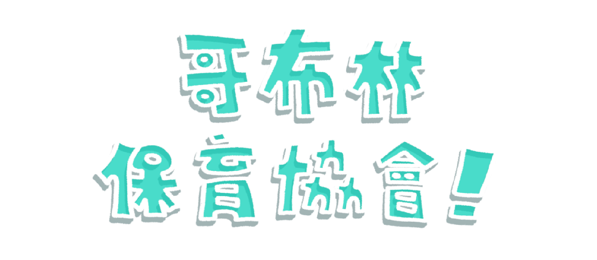
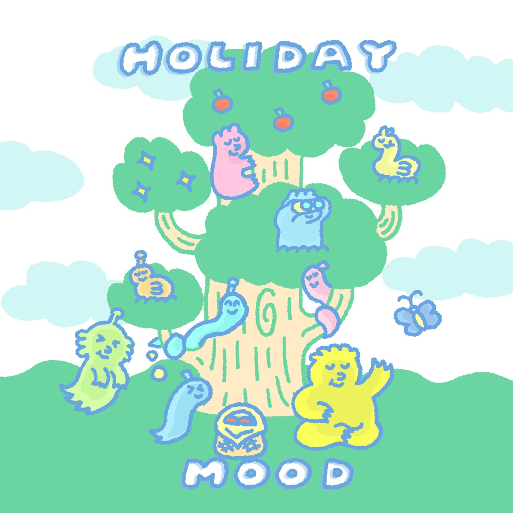
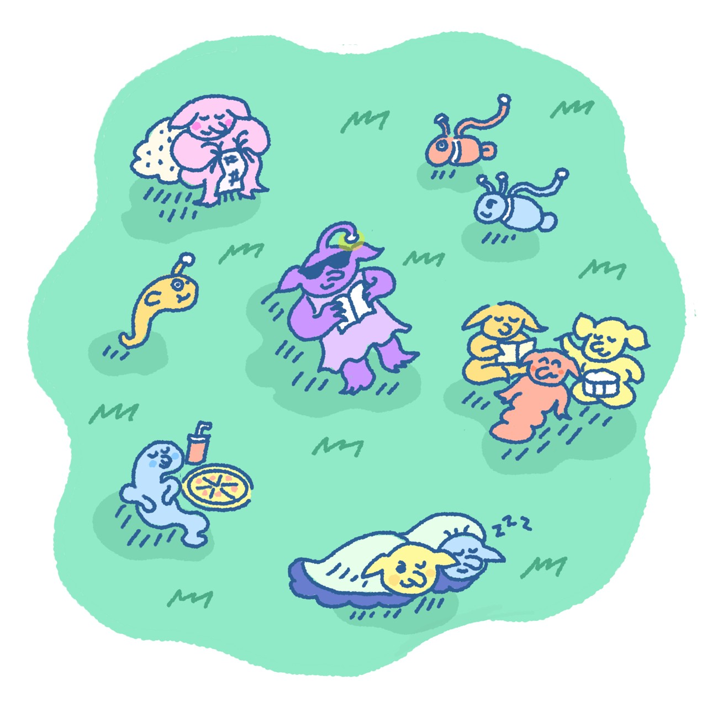
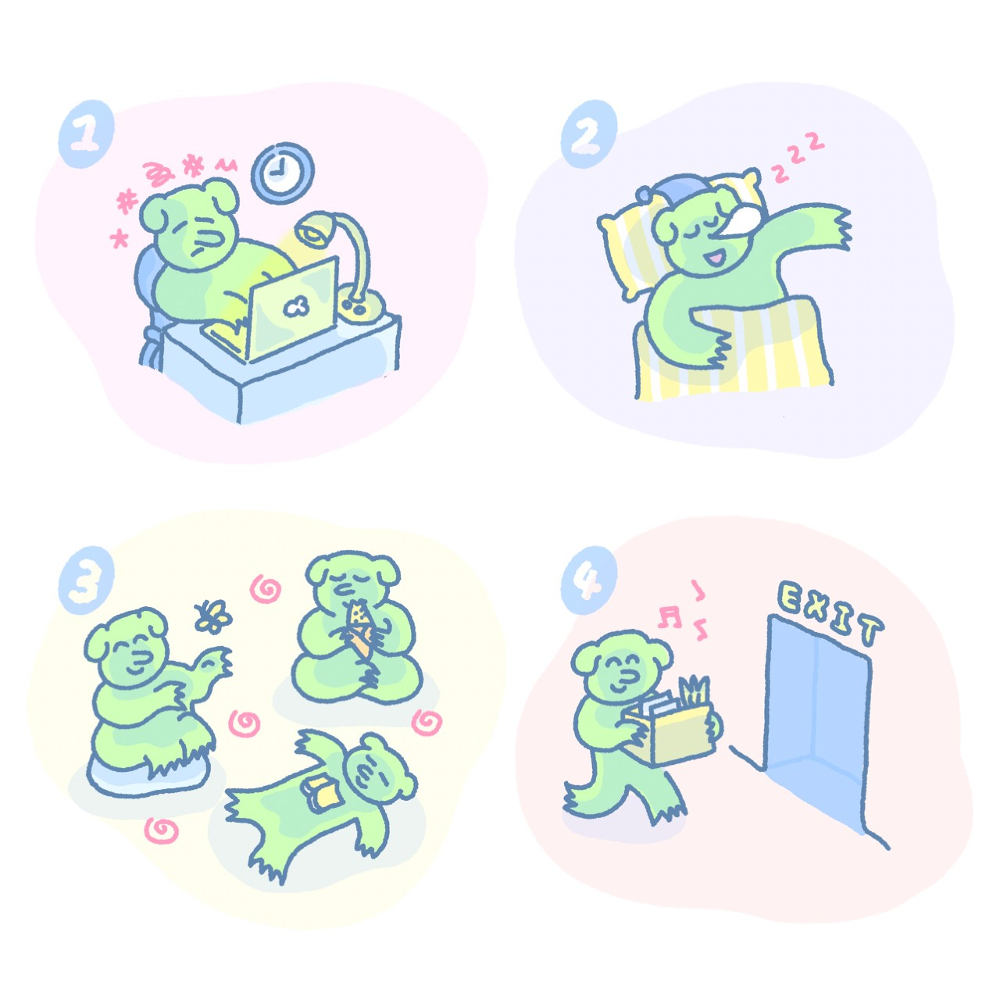

Home
About goblin mode
Goblin characters
Locations
Contact us
About Goblin Mode
What is goblin mode?

Oxford University Press recently announced the 2022 word of the year as voted on by more than 300,000 people—"goblin mode."

“Goblin mode” embodies the idea of owning who you are, taking care of your needs, and living more authentically.

‘Goblin mode’ taps into this spirit of loosening tight expectations and allowing flexibility to explore other ways to cope with stress.